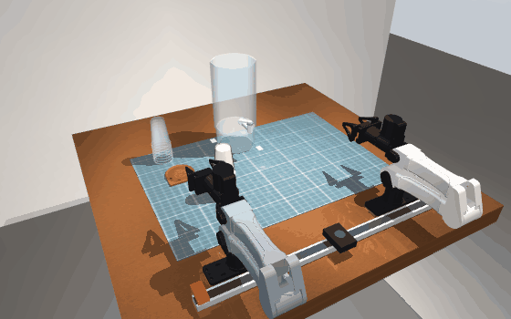
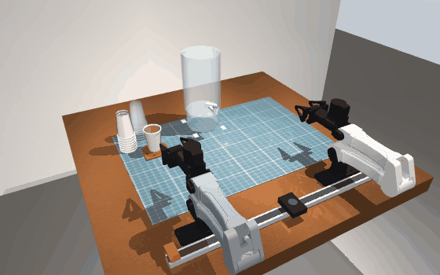

Everest dual-YAM digital twin
Two I2RT YAM arms, a water dispenser with a 360° lever, paper and plastic cups. One cup in, a 7-second pour, one cup out, with skills that only feel what real motors report.
Rendered from the live physics

Level 2
Level 4How it works
- Blind skills. No cameras and no true poses: joint encoders, motor torque, gripper width and effort. Contact is the torque residual after the controller's own gravity and friction model.
- Handle search. A fingertip circles the valve and stops at ~0.9 N, below the ~1.5 N the swivel needs to turn; the handle's yaw comes from the known hand and handle shapes, then it is parked and touched again.
- Cup search. Pecks from above; every outcome rules out cup positions that would contradict it (3-6 mm fit).
- One-arm flip. Hand turned 60° off the arm's line and tilted 20° down: joint 6 alone rolls the held cup 180° with the hand fixed.
- Real-data replay. The taught Level 1 waypoints from the physical robot, played through the simulated control loop, put the cup 0.9 mm from the outlet axis and back in the coaster.
Honest status
| Level | Randomized trials passed | Target |
|---|---|---|
| 1 upright cup | 79 % | 98 % |
| 2 stack, height known | 38 % | 98 % |
| 3 stack, height unknown | 21 % | 95 % |
| 4 lever angle unknown | 25 % | 95 % |
| 5 cup anywhere | 33 % | 90 % |
24 trials per level with randomized positions, friction, mass, gains, base calibration, sensor noise and delay. Nominal runs of Levels 1 and 4 pass the full referee; Levels 2, 3 and 5 finish the task but still brush the remaining stack or target cup with the arm housing. Simulation only: nothing has run on the real arms. Details in docs/RESULTS.md.
The live dashboard
The interactive twin (30-50 fps view with a view cube, step timeline with scrub, telemetry, Monte Carlo and a beat-synced Dance Mode) needs a Python process running MuJoCo, which a static host like Netlify cannot run. Start it locally:
git clone https://github.com/Shaurya-Srivastav/everest-dual-yam-twin git clone https://github.com/i2rt-robotics/i2rt everest-dual-yam-twin/third_party/i2rt cd everest-dual-yam-twin && pip install -r requirements.txt && ./run_sim.sh # http://127.0.0.1:8090